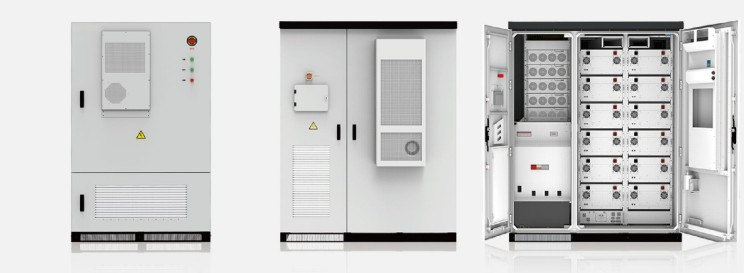
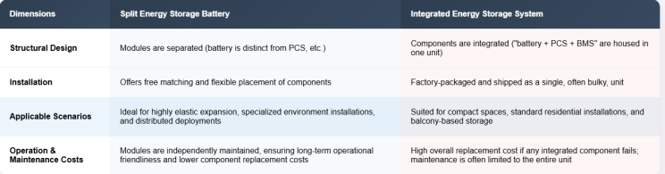
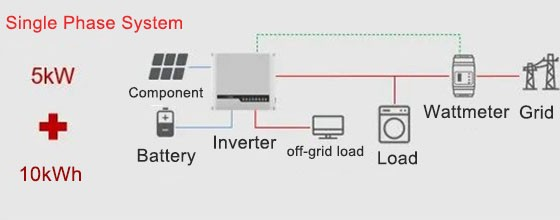
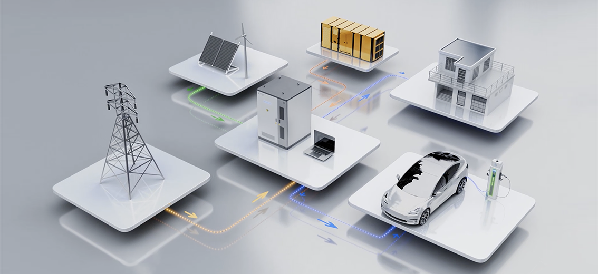
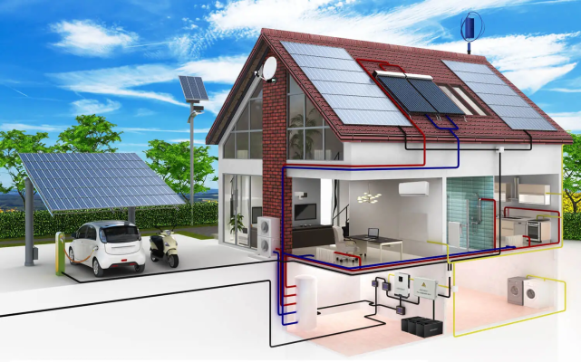
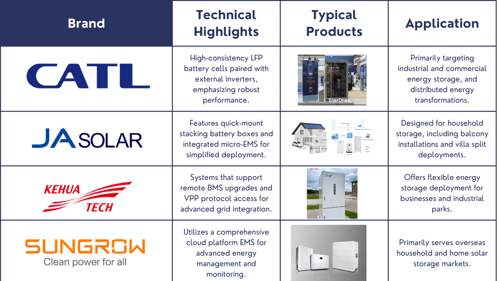

The energy landscape is undergoing a profound transformation, with modular split-type energy storage batteries rapidly emerging as a pivotal technical solution for both household and industrial/commercial applications. This innovative approach, which strategically decouples the core components of an energy storage system, offers compelling advantages over traditional integrated solutions, particularly in areas of safety, scalability, and maintenance convenience. It represents a crucial pathway towards achieving truly flexible deployment and efficient energy management, and with ongoing technological advancements and supportive policies, split energy storage is poised for an explosive growth phase.
What Defines a Split-Type Energy Storage Battery?
A Modular Split-type Energy Storage System (ESS) fundamentally redefines how energy is stored and managed. Unlike conventional monolithic systems, it intelligently separates key functional blocks: the battery module (Battery Pack), the power conversion system (PCS), and the energy management system (EMS).

This intentional decoupling yields several fundamental characteristics that set split-type systems apart:
- Modular Decoupling Design: The core principle is the independent housing and operation of the battery, the electronic control units, and the power conversion components. This design facilitates the independent replacement or upgrade of individual modules, enhancing adaptability and future-proofing.
- Flexible Deployment: The inherent modularity allows for unparalleled flexibility. Battery capacity can be expanded incrementally as demand grows, or the PCS power level can be scaled up or down to match specific energy requirements, avoiding upfront over-investment.
- Separable Installation: A significant advantage is the ability to install the battery enclosure and the inverter in different physical locations. This adaptability is invaluable for diverse architectural contexts, such as various house types, limited or unique spaces, or environments with specific ventilation requirements.
- Enhanced Serviceability: The design prioritizes ease of disassembly and assembly. This modularity translates directly into highly efficient maintenance, as individual modules can be serviced or replaced without disrupting the entire system, minimizing downtime and simplifying troubleshooting.
The Core Distinction: Split-Type vs. All-in-One Integrated Systems
To fully appreciate the advantages of split-type energy storage, it's essential to understand its fundamental differences from traditional integrated energy storage systems:

While integrated systems offer simplicity in initial installation, their lack of modularity can lead to higher long-term maintenance costs and reduced adaptability. Split-type systems, conversely, provide a tailored approach to diverse energy needs.
Diving Deep: Core Technology Paths and Key Components
The robust performance and versatility of split energy storage batteries are built upon several sophisticated technological pillars:
- High Consistency Battery Cells: At the heart of these systems are high-quality battery cells, predominantly lithium iron phosphate (LFP) cells. LFP is favored for its stable voltage platform, intrinsic safety characteristics, and impressive cycle life, often exceeding 6,000 charge-discharge cycles, ensuring long-term reliability.
- Intelligent Battery Management System (BMS): The BMS is the critical intelligent core, responsible for meticulous cell-level monitoring. It continuously tracks voltage, current, temperature, and other vital parameters for each individual cell and manages their balance. Advanced BMS units support standardized communication protocols like CAN and MODBUS, enabling seamless data exchange within the system and with external control platforms.
- External Inverter (External PCS): By separating the inverter, split systems gain immense flexibility. These external PCS units often support multi-machine parallel connection, allowing for scalable power output. They can also integrate with advanced grid services like Virtual Power Plant (VPP) scheduling, enabling intelligent energy dispatch. Crucially, they facilitate off-grid switching, providing reliable power during grid outages.
- Distributed Energy Management System (EMS) Platform: The EMS acts as the system's brain, orchestrating energy flows. In a split architecture, this often takes the form of a distributed platform that performs local data collection, enabling granular control. It also supports cloud-based remote control and the execution of sophisticated economic strategies, optimizing energy usage based on tariffs, demand, and generation.
- Flexible Cable Access System: The system's design incorporates versatile cable access methods, supporting both DC parallel connection and AC coupling. This flexibility allows for integration into a wide array of existing electrical infrastructures and caters to various household, industrial, and commercial requirements.

Ideal Scenarios for Split Energy Storage Solutions
The inherent flexibility and scalability of split energy storage make it uniquely suited for a range of distinct application scenarios:
Residential Market:
- Complex or Discontinuous Spaces: Homeowners with irregular roof layouts or intricate house designs benefit from the ability to deploy battery modules and inverters in different areas, optimizing space utilization and ventilation.
- Adaptive Expansion: Users who prefer to start with a smaller capacity (e.g., 5kWh) and incrementally expand as their energy needs evolve (e.g., to 10kWh or more) find the modular design perfectly accommodating.

Industrial and Commercial Market:
- Space-Constrained Small Businesses: For small businesses like convenience stores or tea shops with limited interior space, the "outdoor battery + indoor inverter" model becomes highly practical, providing robust energy solutions without demanding extensive indoor footprint.
- High Power Requirements: Industrial plants or larger commercial establishments that require substantial power output can easily integrate higher power PCS units and support the parallel connection of multiple battery packs to meet their demanding energy needs.

Replacement/Upgrade Scenarios:
- Seamless Maintenance: In existing energy storage systems, if a battery module fails, a split-type design allows for the targeted replacement of only the faulty battery pack. This significantly reduces system downtime and lowers overall operation and maintenance costs compared to replacing an entire integrated unit.
Policy Support and Market Signals
The momentum behind split energy storage is reinforced by strong policy support and clear market signals from mature regions:
- Policy Encouragement: Directives from energy authorities often encourage "flexible and distributed" energy storage forms. For instance, guidance documents encourage applications that allow for adaptable deployment.
- Standardization for Supervision: In large-scale solar-storage integration projects, split energy storage is increasingly recommended. This facilitates standardized supervision, easier auditing, and seamless system iteration as technologies advance.

- Rapid Growth in Mature Markets: Countries with significant electricity price disparities, such as regions in Europe, Australia, and parts of Asia, have witnessed a rapid surge in the adoption of split-type household storage. This reflects a growing market recognition of its economic benefits and practical advantages.
- Industry & Commercial Project Preference: Applications for industrial and commercial distributed energy storage projects often explicitly favor the "standard battery box + multi-PCS combination" solution, underscoring its efficiency and adaptability for larger-scale needs.
Leading the Charge: Representative Products and Mainstream Manufacturers
Several prominent players in the energy sector are at the forefront of developing and deploying split energy storage solutions:

Conclusion: Beyond Integration – The Power of Combination
In essence, the emergence of split energy storage batteries represents far more than just a change in the physical structure of energy storage systems. It signifies an inevitable evolution driven by the overarching trends of energy flexibility, scenario-based deployment, and enhanced maintenance efficiency. The true power of these systems lies not in monolithic integration, but in their sophisticated combination capability. By enabling tailored, scalable, and easily maintainable energy solutions, split-type energy storage is not just a technological advancement but a fundamental shift that promises to unlock new efficiencies and greater resilience in our energy future.